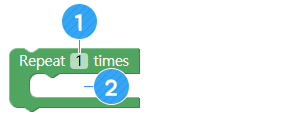

Membuat robot pengatur waktu memasak
• Memahami prinsip timer
• Menjalankan gerakan tertentu pada waktu yang tetap.
• Buat dan jelaskan program pengatur waktu memasak
A. Pengatur waktu (Timer) memasak
Saat kita memasak makanan, kita menggunakan alat yang disebut "timer memasak" untuk mengukur waktu memasak dengan tepat.

① Anda juga dapat menggunakan timer tidak hanya untuk memasak tetapi juga saat belajar.
② Penghitung waktu juga dapat digunakan untuk mencegah insiden.
③ Timer Pengatur waktu sangat nyaman karena Anda dapat mengontrol waktu dengan tepat.
B. AsomeBot memiliki arloji di dalam.
Di dalam AsomeBot ada jam yang sangat canggih yang mengukur waktu dalam milidetik. Oleh karena itu, Anda dapat membuat timer memasak menggunakan fungsi jam AsomeBot.


AsomeBot tidak memiliki tampilan angka atau arloji untuk ditampilkan. Bagaimana AsomeBot dapat mengekspresikan waktu yang diukur ?
AsomeBot dapat membuat suara dan juga bergerak. Oleh karena itu, dapat mengekspresikan waktu dengan cara berikut:
Mari cari tahu lebih lanjut jika ada cara lain untuk berekspresi.
A. Tunda/Delay (grup [ADVANCE])
Menunggu tanpa bergerak selama detik yang ditentukan. Dengan menggunakan blok ini, robot dapat bergerak sesuai keinginan dalam interval 10 detik, 30 detik, dan 60 detik.

① Masukkan jumlah detik untuk menunggu setelah klik.
B. Ulangi/repeat (Grup [ADVANCE])
Ulangi perintah di dalam blok ini sebanyak yang Anda inginkan.
① Tentukan berapa kali untuk mengulangi.
② Tambahkan blok untuk mengulang.
Dengan menggunakan blok repeat dan blok [Delay], buatlah program yang memungkinkan robot untuk Mengepak setiap 30 detik.
C. Gerakan tari Tanpa Opsi (Ggup [DANCE])
Lakukan gerakan balet dengan menggerakkan jari kaki AsomeBot.

AsomeBot bergoyang-goyang di tempat.

AsomeBot mengepakkan kakinya.

AsomeBot melakukan Warigari dengan kakinya.

AsomeBot mengangkat ujung jari kaki.Kebalikan dari gerak balet.

AsomeBot melakukan tarian moonwalk.
D. Bel menyala/Buzzer on (grup [SOUND])
Membuat bel dapat digunakan. Untuk membuat suara dengan bel, Anda harus menggunakan blok ini. Perhatikan bahwa jika blok ini tidak digunakan terlebih dahulu, Anda tidak dapat menggunakan blok.
E. Bel mati/Buzzer off (grup [SOUND])
Ini memungkinkan Anda untuk menggunakan komponen lain lagi setelah menggunakan bel. Anda tidak dapat menggunakan komponen lain saat menggunakan bel. Setelah memutar musik, blok harus digunakan untuk menjalankan komponen lain.

F. Bermain untuk/Play for (grup [SOUND])
Dengan menggunakan blok ini, Anda dapat membuat suara yang Anda inginkan menggunakan frekuensi.

① Pilih skala dari daftar yang ingin Anda mainkan.
② Pilih oktaf skala dari daftar yang akan diputar.
③ Tentukan waktu untuk membuat suara.
Buat catatan untuk 3-oktaf Fa selama 0,5 detik.
G. Ketukan dan tempo
Waktu putar untuk setiap ketukan skor musik yang kami gunakan adalah sebagai berikut: Saat memainkan musik, buat program yang mencerminkan waktu pemutaran untuk setiap ketukan.
① Buat suara pada 3-oktaf G dalam ketukan 8 not.
② Tunggu 1 menit, dan buat program untuk memutar musik dengan bel.

A. Algoritma
Anda dapat membuat penghitung waktu memasak dengan metode berikut: Mari mencari tahu bersama apakah ada cara lain untuk membuatnya.
B. Membuat pengatur waktu memasak pilihan Anda